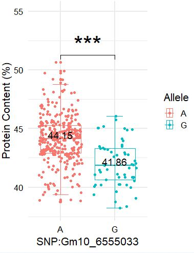

##install packages
install.packages("tidyverse")
install.packages("ggplot2")
##load libraries
library(ggplot2)
library(tidyverse)
##set working directory
##read in data file
data<-read.csv("data file.csv", header=TRUE)
##Create density plot
basicplot<-ggplot(data, aes(x=xvariable, fill=yvariable)) +geom_density(alpha=0.6)
##Set your Aesthetics
basicplot+theme_minimal()+labs(title="Title") +scale_fill_discrete(name="legend name") +theme(text = element_text(size=22)) +scale_fill_brewer(palette = "GnBu")Welcome to my personal collection of code!
As I’ve started to lean into R, I’ve come to collect a series of files containing code scattered across my laptop. I wanted to create this page so I could have an evergreen collection of my work, available to me or anyone else looking for some accessible code.
Making Figures Accessible
Accessibility is important in any scientific figure, but not always considered. Please consider the various ways to make your figures more accessible.
Color-Blind Friendly
Make your figure color-blind friendly by using R’s Color Brewer color pallet.

Making Figures
I have found CMplotand ggplot2to be very useful programs for creating figures, and you’ll notice how I lean into these programs. CMplot is great for making both rectangular and ciruclar Manhattan plots, as well as QQ plots. ggplot2 is incredibly robust and has seemingly endless ways to customize each figure, allowing you to create diverse figures that fit together seamlessly.
Density Plots

Boxplots

##install packages
install.packages("ggprism")
install.packages("patchwork")
install.packages("magrittr")
install.packages("tidyverse")
install.packages("ggplot2")
install.packages("extrafont")
##load libraries
library(ggplot2)
library(tidyverse)
library(viridis)
library(magrittr)
library(ggprism)
library(patchwork)
library(ggsignif)
library(extrafont)
loadfonts(device="win")
##set working directory
##read in data file and set variables
data<-read.csv("Inputfile.csv", header=TRUE)
XVAR<-data$varaible_A
YVAR<-data$varaible_B
xaxis<-"x-axis name-variable_A"
yaxis<-"y-axis name-variable_B"
##calculate median value for later statistics
med<-aggregate(XVAR ~ YVAR, data, median)
##create a boxplot
basic_plot<-ggplot(data, aes(x=XVAR, y=YVAR, color=YVAR))+geom_boxplot(aes(color=YVAR))+geom_jitter(aes(color=YVAR))+stat_boxplot(mapping=NULL, data=NULL, geom="errorbar", width=0.3)+geom_signif(comparisons=list(c("C", "T")), map_signif_level = TRUE, textsize = 12, family = "TT Times New Roman", color="black")
##perform statistics on the boxplot
stat_boxplot<-basic_plot+geom_text(data=med, aes(label=XVAR), color="black", size=5 +0.08, vjust=0, family="Times New Roman")
##adjust the limits of the x-axis
stat_boxplot+xlim(0.0,0.5)
##customize the boxplot with your chosen aestethics
ZZZ<-ZZ+theme_minimal(base_size = 12, base_family = "TT Times New Roman")+coord_flip()+labs(x="xaxis", y="yaxis")+scale_color_discrete("Allele")+theme(axis.text.x=element_text(color = "black"))+theme(axis.text.y = element_text(color="black"))Manhattan Plots

##install packages
install.packages("CMplot")
##load libraries
library("CMplot")
##set working directory
##read in input file
Y=read.csv("inputfile.csv", header=TRUE)
##create manhattan plot with the significance threshold, and file type of your choice
CMplot(Y, plot.type="m",threshold=3e-4), file="tiff", file.name="filename", main="title")
##customize the y-axis limits
ylim=c(0,14)QQ Plots

##install packages
install.packages("CMplot")
##load libraries
library("CMplot")
##set working directory
##read in input file
Y=read.csv("inputfile.csv", header=TRUE)
##make QQ plot, with threshold, file type, and color of your choice
CMplot(Y, plot.type="q",threshold=3e-4, file="extension_type", file.name = "file name", main = "title", dpi=300, col=c("goldenrod"))
##customize the y-axis limits
ylim=c(0,14)GWAS Analysis
There are a number of packages available for GWAS analysis, but I have become fond of the GAPIT package. I’ve used the BLINK method in my own research as it is currently the most powerful computationally and has a lower risk of false positives than other models. You will find the code I used for GWAS analysis via BLINK below.
##install packages
install.packages("gplots")
devtools::install_github("SFUStatgen/LDheatmap")
install.packages("genetics")
install.packages("EMMREML")
install.packages("scatterplot3d")
install.packages("bigmemory")
install.packages("biganalytics")
##load libraries
library(gplots)
library(LDheatmap)
library(genetics)
library(EMMREML)
library(compiler)
library(scatterplot3d)
library(bigmemory)
library(biganalytics)
source("http://zzlab.net/GAPIT/gapit_functions.txt")
source("http://zzlab.net/GAPIT/emma.txt")
source("http://zzlab.net/FarmCPU/FarmCPU_functions.txt")
source("http://zzlab.net/GAPIT/GAPIT.library.R")
source("http://zzlab.net/GAPIT/gapit_functions.txt")
##set working directory
##read in input file (tab delim.) of genotypic data
myG <- read.delim(file.choose(), sep="\t", header=FALSE)
##make genotypic data numeric
myGAPIT <- GAPIT(G=myG, output.numerical=TRUE)
##read in input file (.csv) of phenotypic data
##ensure the accessions within both phenotypic and genotypic data files are in the same order
myY <- read.csv(file.choose(), head = TRUE)
##Perform GWAS analysis
myGAPIT_MLM <- GAPIT( Y=myY,G=myG,PCA.total=3,model=c("Blink"),Multiple_analysis=TRUE)